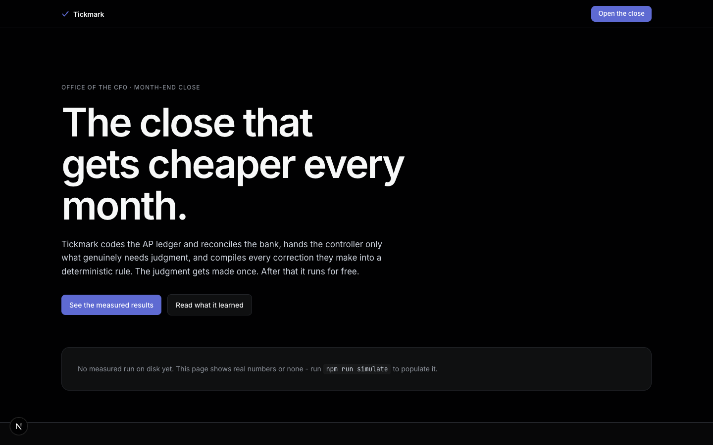
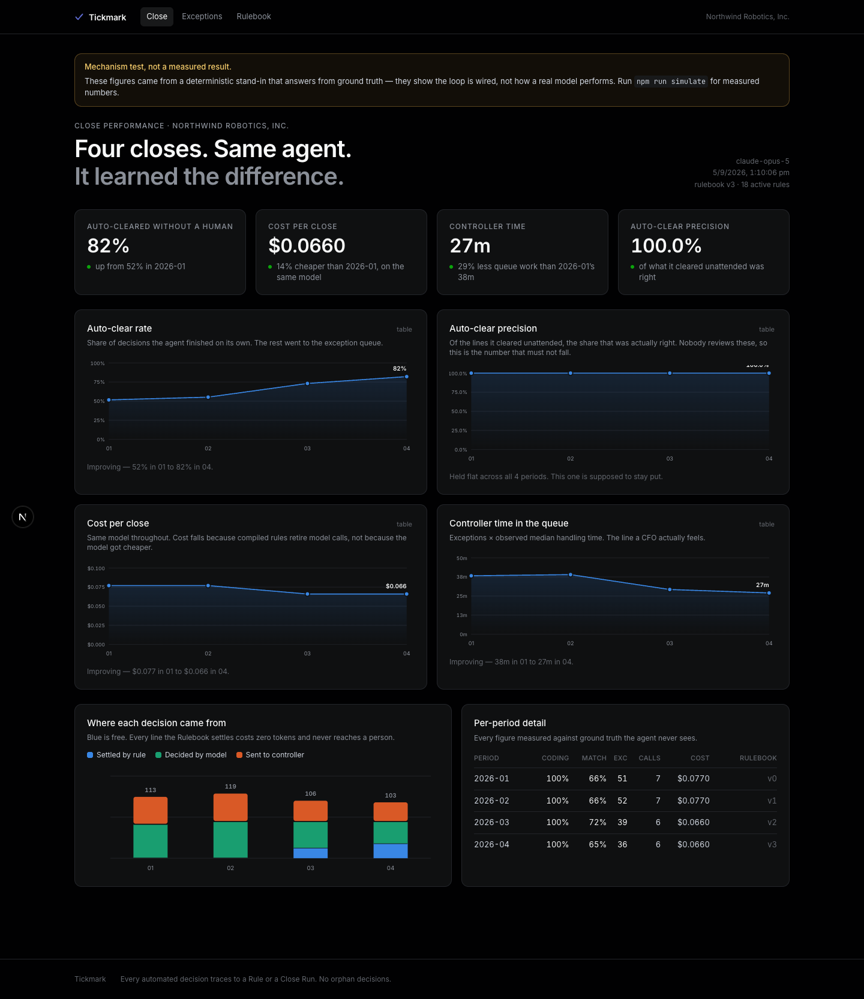
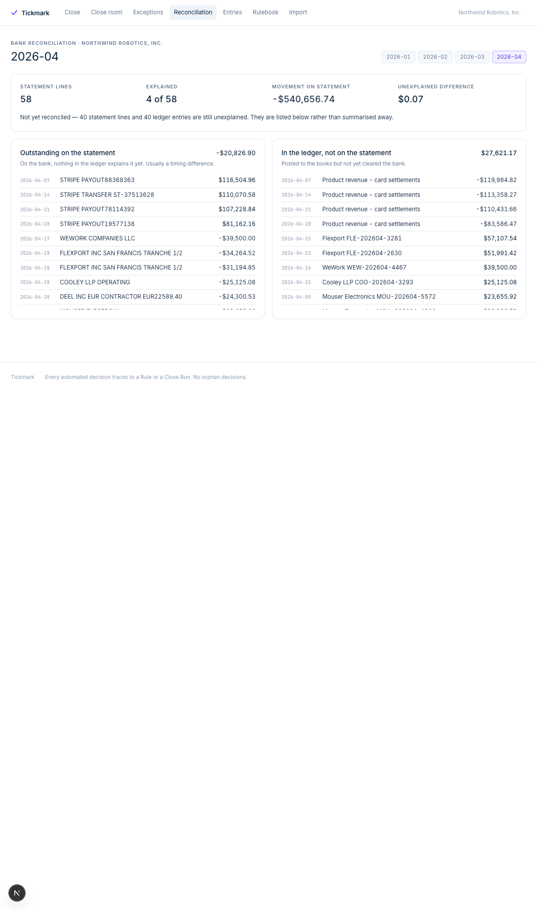
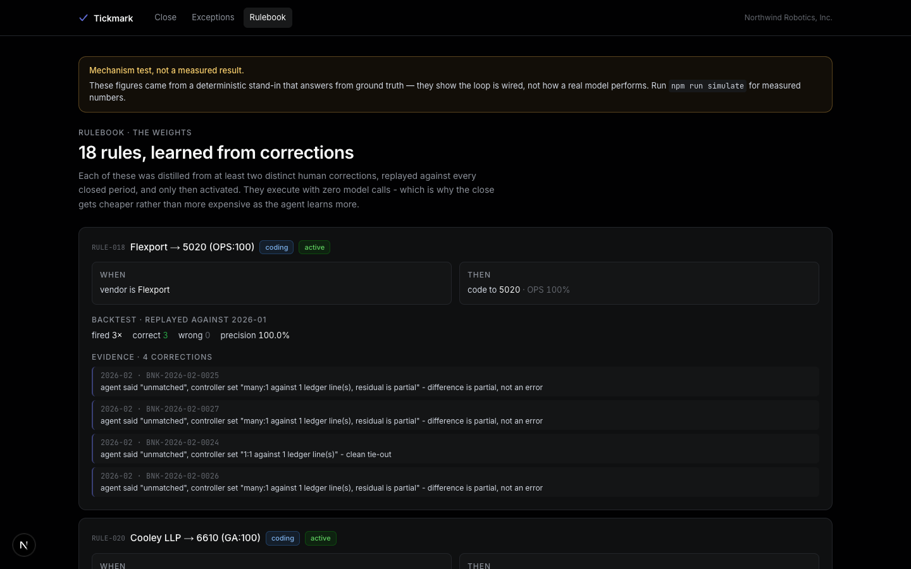
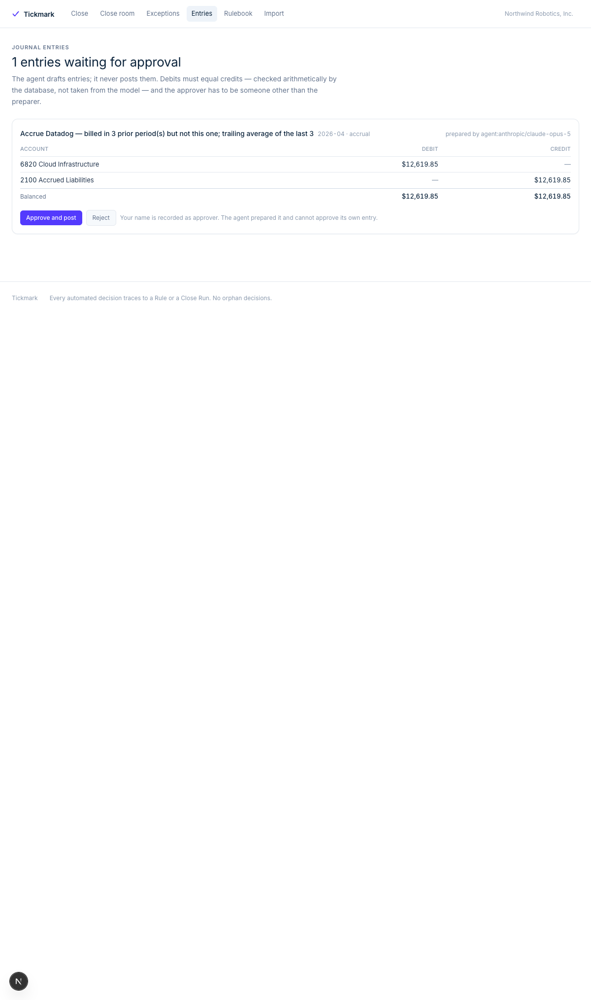
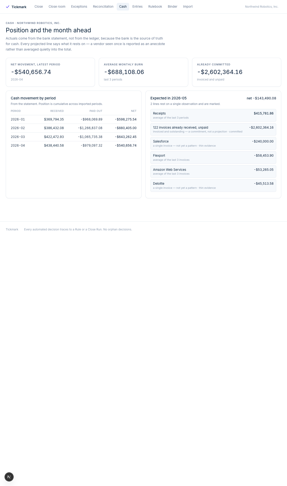

Tickmark runs that close — and compiles every correction a controller makes into a rule that then runs for zero model calls.

It codes the invoices and reconciles the statement across all four match shapes — one payment, a batch, instalments, a lockbox.

Every unreconciled line listed at its amount, both directions — because “97% reconciled” is not something anyone can sign.

The second correction proposes the rule — citing both, and replayed against every closed period before anyone may adopt it.

It found the vendor that went quiet and drafted the accrual, balanced. The agent prepares — it cannot approve its own entry.

Committed is separated from estimated, and a vendor seen once is labelled thin evidence — not averaged quietly into the total.